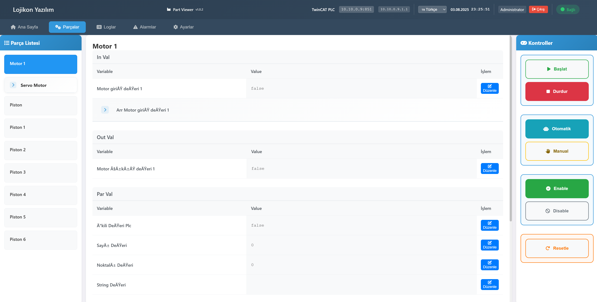

Üretim Takip Sistemleri Galerisi
Gerçek projelerimizden örnekler

Üretim Takip HMI Dashboard
Gerçek zamanlı üretim performansı izleme ve kontrol arayüzü

Üretim Takip HMI Kontrol Paneli
Üretim süreçlerini yöneten gelişmiş HMI kontrol sistemi

Üretim Takip HMI İzleme Ekranı
Detaylı üretim izleme ve performans analizi arayüzü

Üretim Takip HMI Analiz Dashboard
OEE analizi ve detaylı performans raporlama sistemi